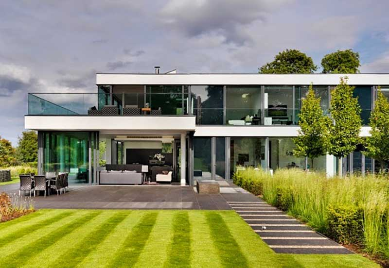

¡Bienvenidos a Virtual 360! Nos especializamos en ofrecer una experiencia única para descubrir y alquilar casas de campo a través de tours virtuales 360°. Ya sea que estés buscando un escape de fin de semana, una casa para vacaciones prolongadas o un lugar especial para eventos, nuestras presentaciones virtuales te permiten explotar cada rincón de las propiedades desde la comodidad de tu hogar.

¿Que ofrecemos?
1. Tours Virtuales 360°
Exploración completa: Navega por las casas de campo como si estuvieras allí. Recorre cada habitación, explora los exteriores y descubre los detalles que hacen única a cada propiedad.
Interactividad: Utiliza herramientas interactivas para obtener información adicional sobre las caracteristícas y comodidades de cada casa.
2. Variedad de Propiedades
Diversidad de Opciones: Desde acogedoras cabañas hasta lujosas fincas, ofrecemos una amplia variedad de casas de campo paa todos los gustos y necesidades.
Ubicaciones Exclusivas: Propiedades ubicadas en los entornos más bellos y tranquilos, ideales paa desconectar y relajarse.
3. Facilidad de Alquiler
Proceso Sencillo: Alquilar tu casa de campo ideal nunca ha sido tan fácil. Realiza reservas directamente desde nuestra plataforma.
Soporte Personalizado: Nuestro equipo está disponible para asistirte en cada paso del proceso, asegurando que encuentres la casa perfecta para tu estancia.
Beneficios de los Tours Virtuales 360°.
Explora en Detalle
- Visita en Cualquier Momento: Los tours virtuales esán disponibles las 24 horas del día, permitiéndote explorar las propiedades a tu conveniencia.
- Ahorro de Tiempo y Esfuerzo: Evita viajes innecesarios y conoce cada casa en profundidad antes de tomar una decisión.
Toma Decisiones Informadas
- Visualización Realista: Obtén una visión precisa del espacio y el entorno de cada casa.
- Confianza y Transparencia: lo que ves es lo que obtienes. Los tours virtuales te muestran la realidad de cada propiedad sin sorpresas.
Cómo Funciona
1. Explora: Navega por nuestra colección de casas de campo y realiza tours virtuales 360° de las propiedades que te interesen.
2. Selecciona: Elige la casa de campo que mejor se adapte a tus necesidades y preferencias.
3. Reserva: Completa el proceso de alquiler directamente en nuestra página web con unos pocos clics.
4. Disfruta: Prepárate para disfrutar de una estancia inolvidable en la casa de campo de tus sueños.